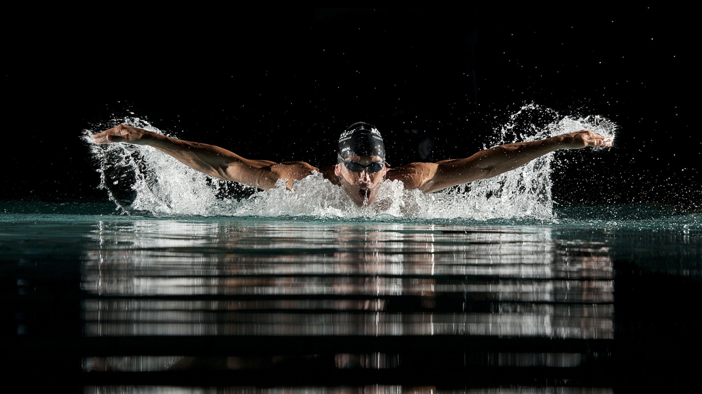
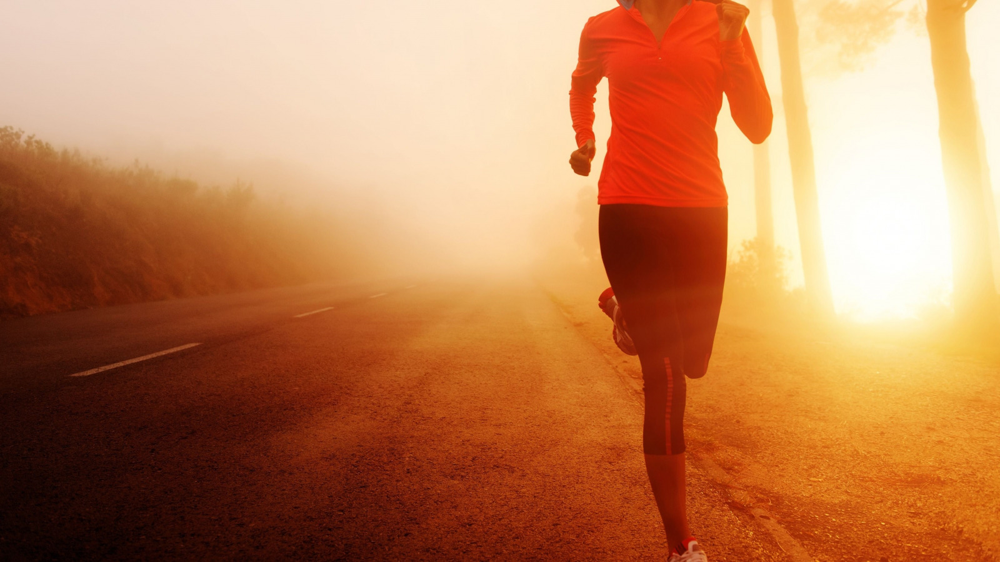
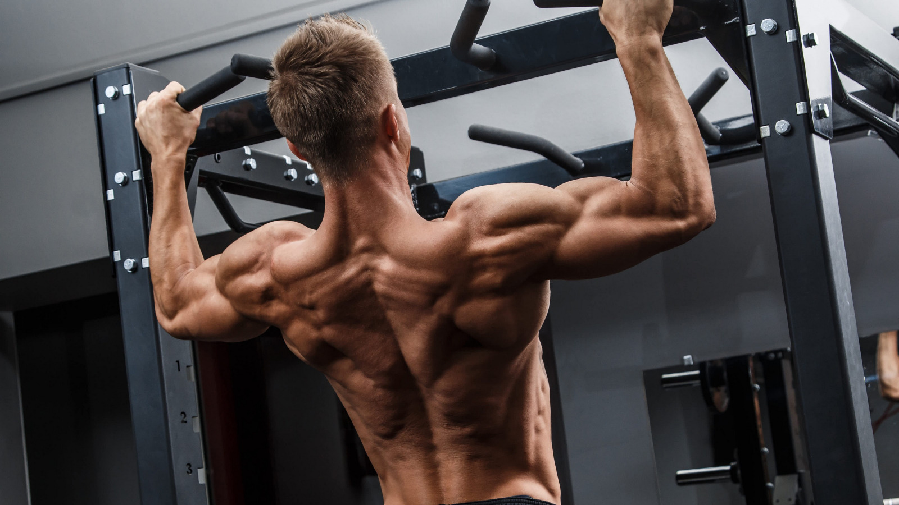

>
У здоровому тілі здоровий дух!
Спорт це дуже корисно,і неважливо яким ти спортом займаєшся!
І зараз я перечислю різні види спорту і трохи розкажу про них!
1.Плавання

Плавання чинить позитивний вплив на здоров'я людини: Розвиває і зміцнює м'язи, тонізує та розслаблює одночасно.
Це єдиний вид спорту, який задіює абсолютно всі м'язові групи тіла.
Зміцнює загальний стан здоров'я, загартовує, слугує профілактикою різноманітних захворювань.
2. Біг

Дослідження показало, що в людей, які бігають, знижується ризик смертності від різних причин на 27%,
ризик серцево-судинної смертності на 30% та ризик смертності від раку на 23%.
Покращує серцево-судинну, метаболічну форму та профілактує ожиріння. Допомагає підтримати здоров'я скелета.
3. Воркаут

Воркаут - кращий спосіб зробити прекрасну форму.
Дані тренування позитивно впливають на загальний стан здоров'я, а також на стан спини.
Ви зможете виконувати складні елементи і акробатичні трюки, які будуть піднімати вам настрій
і дарувати радість здорового життя від отриманих успіхів.